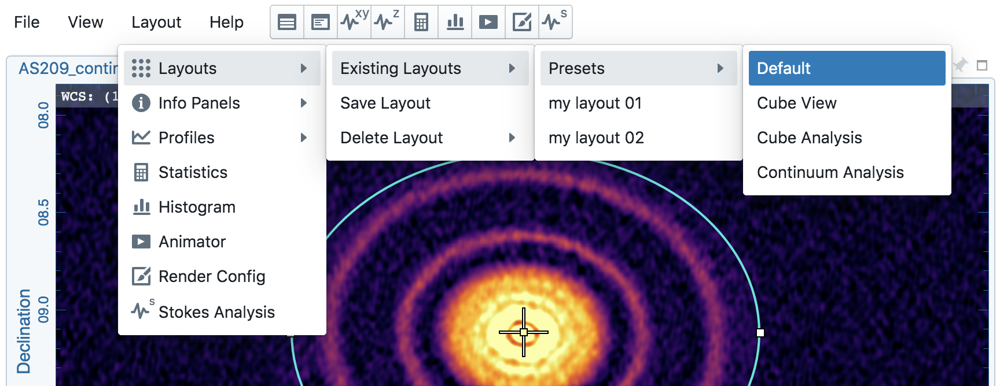
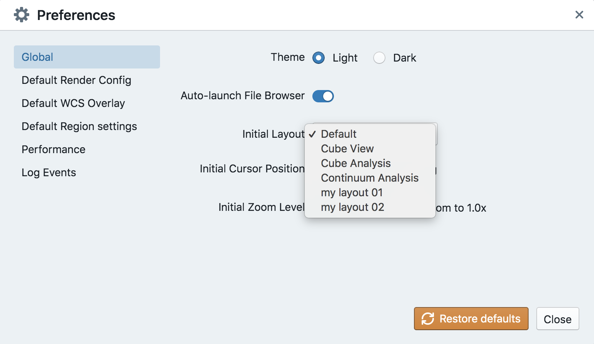
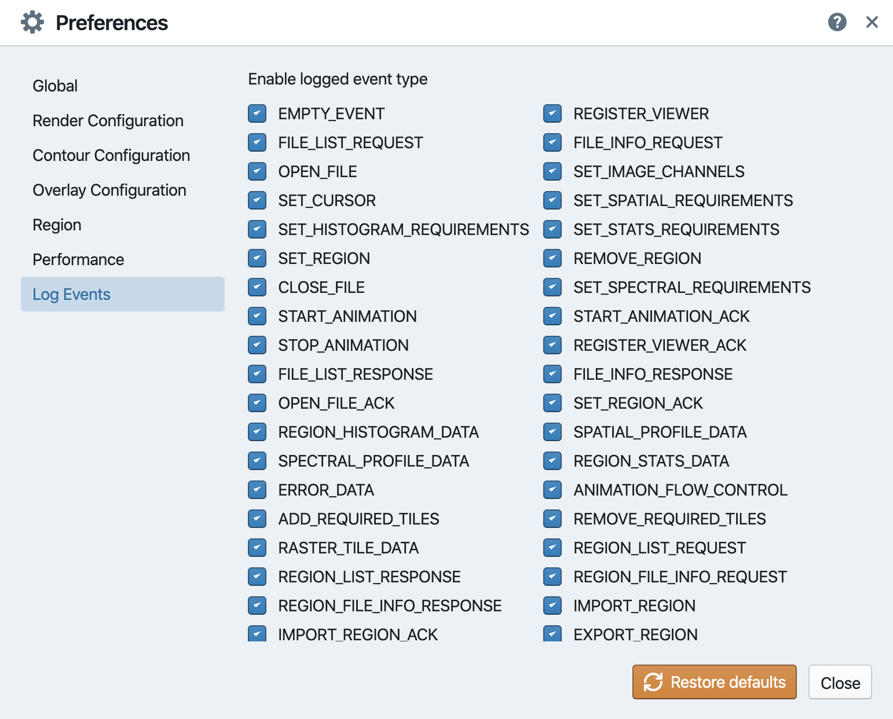

Graphical user interface¶
The graphical user interface (GUI) of CARTA is designed to be flexible and user friendly to support most of use cases, such as continuum image analysis, or spectral line cube analysis, etc. In this section, we introduce the GUI and provide examples to guide users to get familiar with configuring layouts via mouse interactions. Examples on how to interact with regions and charts are provided as well.
Components¶
The GUI of CARTA is classified into different components:
main window
menu bar
widget bar
dialogue bar
tool bar
panel (docked widget)
floating widget
tab
dialogue
status icon
The main window consists of a set of panels and each panel may contain multiple docked widgets as tabs. For example, in the above figure there are five panels in the main window and there are two docked widgets as tabs in the bottom-left panel. A tab or a docked widget may be detached to become a floating widget. The menu bar provides control options, such as image input/output, launching widgets, getting helps, etc. The widget bar provides widgets to view or to analyze images. The dialogue bar provides dialogues for configurations. The icon at the top-right corner of the main window is an indicator of server (backend) status. A dialogue provides options to configure compoments, such as image layout, or region properties, etc. A tool bar provides tools for a widget, such as zoom buttons for the image viewer widget or the export options for the spectral profile widget, etc.
Getting help¶
This online user manual can be accessed via “Help” -> “Online manual”. A new browser window will be launched and show the CARTA user manual. In addition, in-app help (no internet is required) can be accessed via the “?” icon at the top-right corner of a panel. The help content will be displayed in a drawer.
Configuring the layout¶
The layout configuration can be changed by mouse operations, such as click or drag-and-drop. The drag-and-drop action is guided on the GUI with a semi-transparent guider. Various operations are demonstrated below.
Resizing a panel¶
As shown in the example below, a panel can be resized by dragging its borders. After a panel is resized, nearby panels are resized automatically to fit the new layout. Note that the appearance of the UI elements is adaptive to the size of the panel, as seen in the render configuration widget or the animator widget in the example.
Relocating a tab as a new panel¶
A tab can be relocated by dragging its title to a desired new panel. The target location is visualized with a semi-transparent box, as shown in the example below.
Relocating a tab to another panel¶
A tab can be moved to other existing panel by dragging its title to the upper boarder of the target panel, as shown in the example below.
Maximizing and restoring a panel¶
By clicking the maximize icon at the top-right corner of a panel, the panel (including all tabs) will be maximized to the main window. By clicking the restore icon, the panel will be restored to its original location.
Detaching and attaching a tab¶
By clicking the detach (unpin) icon at the top-right corner of a panel, the activated tab will be detached to become a floating widget. By dragging the attach (pin) icon, a floating widget will be attached to an existing panel or as a new panel.
Creating a widget as a floating widget or as a tab¶
A widget is activated as a floating widget by clicking the button in the widget bar. Alternatively, a widget can be activated as a tab by dragging the button in the widget bar directly to a desired location.
Light and dark theme¶
CARTA supports a light (default) and dark theme. The theme can be changed using the View -> Interface menu item, or the shortcut shift + D.
Custom layout, save, and restore¶
CARTA has a set of preset layouts sutiable for different kinds of image analysis. These layouts are accessible via the menu Layout -> Layouts -> Existing layouts -> Presets.
Users may further customize a preset layout or make a new layout from scratch for different purposes and save it for the future. To save a custom layout, use the menu Layout -> Layouts -> Save layout. A name is required when saving a layout (e.g., “my layout 01” in the above example).
A saved layout can be restored via the menu Layout -> Layouts -> Existing layouts. The currently activated layout is highlighted in blue (“Default” in the above example). Saved layouts can be removed via the menu Layout -> Layouts -> Delete layout.
By deafult, CARTA will load the “Default” preset layout when initialized. Which layout, including user customized layouts, should be loaded can be further defined via the preferences dialogue File -> Preferences. The initial layout can be set via Global -> Initial layout.
User preferences¶
CARTA provides a number of preferences for users to customize the GUI, including layouts. The preferences are persistent so that next time when users launch CARTA, all the preferences and a layout are restored. The preferences dialogue is accessible via the menu File -> Preferences. Preferences are effective after CARTA reloads, except few that are effective immediately. Below we summarize the options of all preferences.
Global
Theme: to adopt light or dark theme of the GUI (default: light) [effective immediately]
Auto-launch file browser: to launch the file browser or not when CARTA is initialized (default: yes)
Initial layout: the layout to adopt when CARTA is initialized (default: “Default”)
Initial cursor position: to fix the cursor position on the image or not when CARTA is initialized. If it is fixed, a cross will be shown at the image center. Use “F” key to switch to the tracking mode (default: Tracking)
Initial zoom level: to select the initial zoom level of the image to be filling up the field of view or to be displayed as one image pixel to one screen pixel ratio (default: “Zoom to fit”)
Zoom to: zoom with respect to cursor position or image viewer center
Enable drag-to-pan: pan image by mouse drag or mouse click
WCS matching on append: trigger WCS matching automatically for newly appended images
Spectral matching: spectral convention adopted for spectral matching
Render configuration
Scaling: the scaling function of the color map (default: linear)
Color map: the default color for the raster image (default: inferno)
Percentile ranks: the default clip level for the color map (default: 99.9%)
NaN color: color for rendering NaN pixels
Contour configuration
Generator type: tools for generating a set of contour levels to be calculated and rendered
Smoothing mode: image smoothing mode before calculating contour vertices
Default smoothing factor: kernel size in number of pixels for image smoothing
Default contour levels: number of contour levels to be generated by the level generator
Thickness: line thickness of contour rendering
Default color mode: render contours with a constant color or a color map
Default color map: color map for contour rendering
Default color: constant color for contour rendering
Overlay configuration
AST color: the color for the WCS overlay, including border, grid line, ticks, labels, and title (default: blue)
AST grid visible: to show grid line or not as default (default: yes)
AST label visible: to show coordinate labels or not as default (default: yes)
WCS format: the format of the displayed world coordinate. The default is “automatic” which means for galactic or ecliptic system, the world coordinate is displayed in decimal degrees, and for FK4, FK5, or ICRS, the world coordinate is displayed in sexigesimal format. (default: automatic) [effective for new images]
Beam visible: show a spatial resolution element
Beam color: color for rendering a spatial resolution element
Beam type: styling for rendering a spatial resolution element
Beam width: line width for rendering a spatial resolution element
Region
Color: the default color of a region (default: cyan) [effective for new regions]
Line width (px): the default line width of a region (default: 2) [effective for new regions]
Dash length (px): the default dash length of the line composing a region. The default is to show a region in solid line (default: 0) [effective for new regions]
Region type: the default selected region in the tool bar of the image viewer (default: rectangle)
Creation mode: the method of how a rectange or an ellipse is created by mouse dragging. Two methods are supplied: center-to-corner and corner-to-corner (default: center-to-corner) [effective for new regions]
Performance
Low bandwidth mode: reduce required image resolution by a factor of two and reduce the cursor responsiveness to 400 ms
Compression quality (image): a parameter (1~32) to control the image quality with lossy compression. The higher the number is, the better quality the images are. Choose with caution. (default: 11) [effective immediately]
Compression quality (animation): a parameter (1~32) to control the animation quality with lossy compression. The higher the number is, the better quality the images are. Choose with caution. (default: 9) [effective immediately]
GPU tile cache size (number of tiles): the cache size of GPU for tiles (default: 512)
System tile cache size (number of tiles): the cache size of system memory for tiles (default: 4096)
Contour rounding factor: number of contour vertices per pixel
Contour compression level: compression quality of contour image data
Contour chunk size: chunk size of contour data streaming
Contour control map resolution: control map resolution for reprojecting contour vertices to other coordinate system
Stream image tiles while zooming: streaming image tiles for all sampled zoom levels
Stop animation playback in: a timer to automatically stop animation playback for server resource management
Log events
This is for debugging purpose. Normal users can skip this part. The client side and the server side of CARTA communicate through “protocal buffer” messages. For debugging purpose, advanced users can identify a set of messages in the list and launch browser’s Javascript console to see those messages.

Mouse interactions with images¶
Zooming¶
The image can be zoomed in by scrolling up and zoomed out by scrolling down.
Panning¶
The image can be panned by mouse drag-and-drop on the image.
If it is intended to pan inside a region, please hold command (mac) or ctrl (linux) key and click inside a region, or simply use middle click. Single click on a region will change the region state to “selected”. With the same operation, users can center an image pixel (regardless it is inside a region or not) in the image viewer.
Mouse interactions with region of interest¶
Region creation¶
A region can be created by firstly entering the region creation mode then drawing on the image viewer. To enter the region creation mode, click the region button at the bottom-right corner of the image viewer or press “C” key. Double-clicking the region icon brings up all available region types (rectangle, ellipse, polygon, and point, as of v1.3). To create a point region, a single click will do. For rectangle or ellipse, it can be created in the “center-to-corner” mode or the “corner-to-corner” mode, depending on the preference setting in the preference dialogue (File -> Preferences -> Default region settings). To temporarily switch to the other mode than the default, hold “command” (mac) or “ctrl” (linux) key then drag. “circle” and “square” regions are the special cases of ellipse and rectangle regions, respectively. These symmetric regions can be created by holding shift key then dragging.
To create a polygon region, start with a click followed by a series of clicks to define anchors of a desired polygonal shape and finish with a double click. CARTA detects “complex” polygon (polygon with intersections) and shows it in pink color. Spectral profiles, statistics, or histogram of a complex polygon can still be requested but please note that the results may be beyond users’ expectations since the actual pixel coverage depends on how a complex polygon is created.
Region selection and modification¶
Click on a region will change the region state to “selected” and the selected region will be highlighted in the region list widget. Alternatively, a region can be selected by clicking the region list. CARTA provides the flexibility to select “region in region” as demostrated in the following video. The layer order of regions is adjusted automatically based on the region size. To de-select all regions, press “esc” key.
Double-click on a region or a region in the region list brings up the region property dialogue. The dialogue allows users to modify region’s name, location, shapes, and region cosmetics. Pressing “delete” or “backspace” key will remove the selected region.
Tip
“backspace” does not delete a region…
If using CARTA remote mode in Firefox on MacOS, you may find the “backspace” key navigates back a page instead of removing a region. This behaviour can be prevented by modifying your Firefox web browser settings:
Enter about:config in the address bar.
Click “I accept the risk!”
A search bar appears at the top of a long list of preferences. Search for “browser.backspace_action”
It will likely have a value of 0. Double click it, and then modify it to a value of “2”.
Close the about:config tab and now backspace will no longer navigate back a page.
For a polygon region, new anchors can be added by clicking on the line segment. An anchor can be delected by double clicking on the anchor.
Mouse interactions with charts¶
Zooming¶
A chart (profiles and histograms) can be zoomed by wheel scrolling.
Alternatively, horizontal zoom, vertical zoom, and box zoom are supported.
Panning¶
Dragging while holding the shift key pans the chart.
Resetting range¶
Double-clicking on the chart resets the plotting range.
Controls and shortcuts¶
CARTA supports keyboard shortcuts to enable certain controls without using a mouse. A summary is accessible via the menu Help -> Controls and Shortcuts, or the shortcut shift + ?. The shortcuts are slightly different depending on the operating system in use. The shortcuts for each operating system are summarized in the following table.
Control |
macOS |
Linux |
|---|---|---|
Help |
||
Controls and shortcuts |
shift + ? |
shift + ? |
Navigation |
||
Pan image |
click |
click |
Pan image (inside region) |
cmd + click / middle-click |
ctrl + click / middle-click |
Zoom image |
mouse wheel |
mouse wheel |
Regions |
||
Region properties |
double-click |
double-click |
Delete selected region |
del / backspace |
del / backspace |
Toggle region creation mode |
C |
C |
Deselect region |
esc |
esc |
Switch region creation mode |
cmd + drag |
ctrl + drag |
Symmetric region creation |
shift + drag |
shift + drag |
Toggle current region lock |
L |
L |
Unlock all regions |
shift + L |
shift + L |
Appearance |
||
Toggle light/dark theme |
shift + D |
shift + D |
Cursor |
||
Freeze/unfreeze cursor |
F |
F |
File controls |
||
Open image |
cmd + O |
ctrl + O |
Append image |
cmd + L |
ctrl + L |
Export image |
cmd + E |
ctrl + E |
Frame controls |
||
Next frame |
cmd + ] |
ctrl + ] |
Previous frame |
cmd + [ |
ctrl + [ |
Next channel |
cmd + up |
ctrl + up |
Previous channel |
cmd + down |
ctrl + down |
Next Stokes |
cmd + shift + up |
ctrl + shift + up |
Previous Stokes |
cmd + shift + down |
ctrl + shift + down |